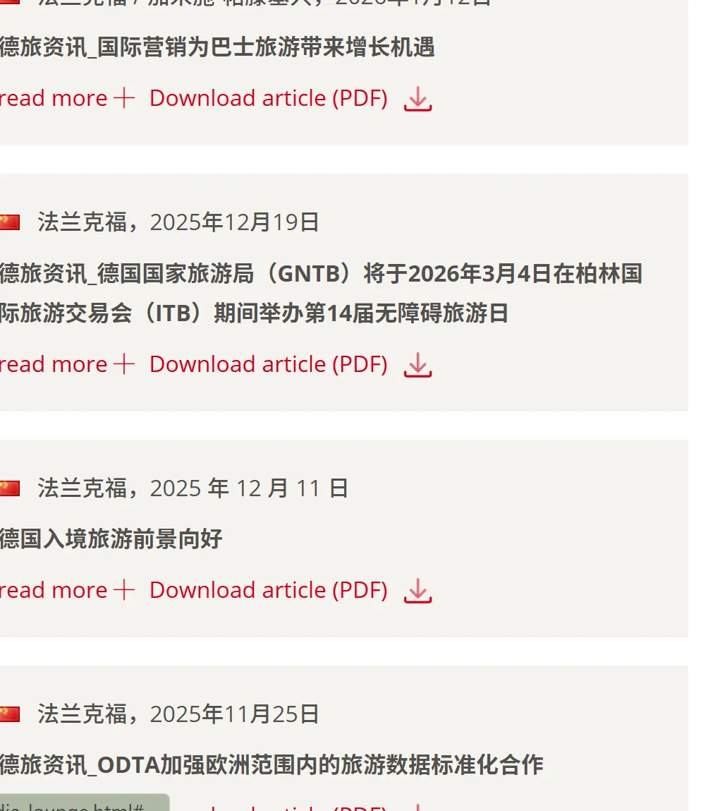
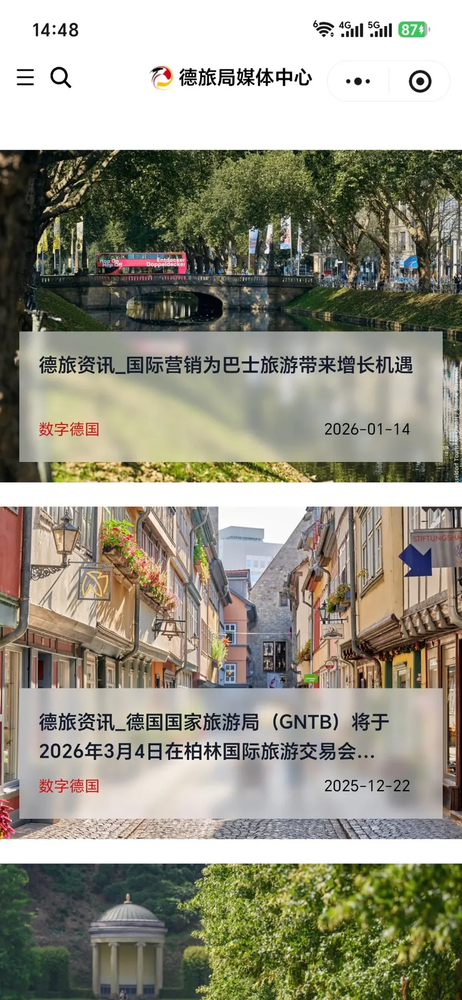
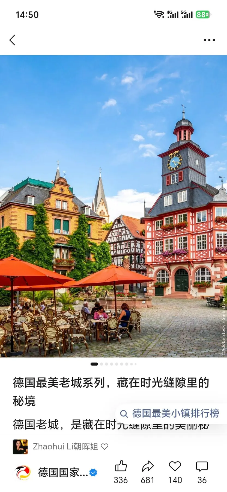
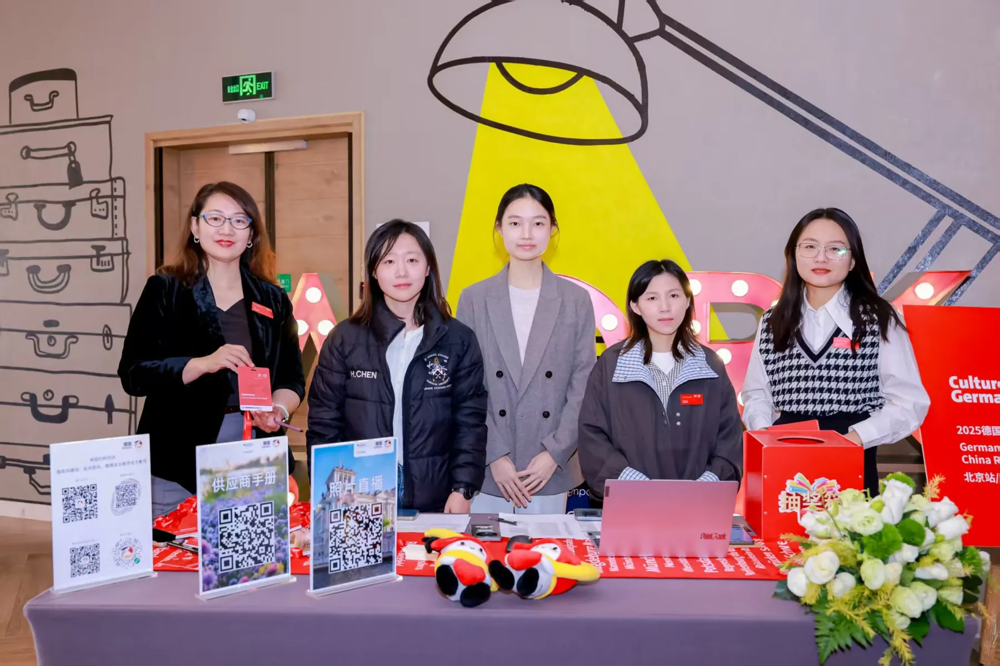
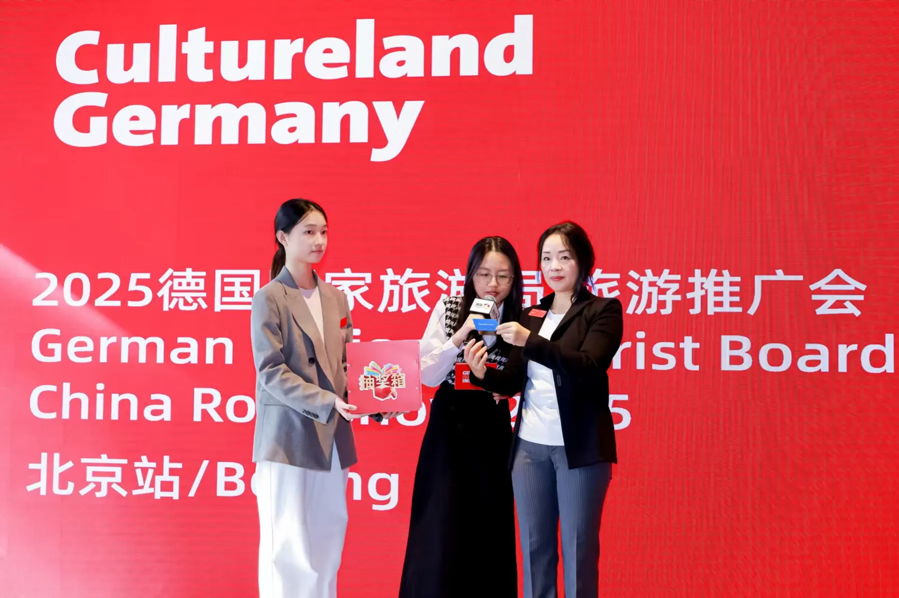

德语专八、英语CET-6（500+）多语种运营能力，具备德国国家旅游局北京办事处实战运营经验。连续3个月独立执行微信、小红书等多平台内容发布，累计跟进产出24+篇；参与3场媒体分享会/旅游推介活动（北京2场、广州1场）的全链路执行，覆盖90+媒体代表与KOL；日常维护500人官方粉丝群，熟悉用户触达与互动运营。
擅长以数据驱动决策，能用KAWO、Excel追踪多维度数据并输出结案报告，支撑团队策略调整。正在独立运营抖音口播自媒体，对短视频增长逻辑有一手体感。从经理的批评指正中持续迭代——更细心、更主动沟通、更善于数据可视化。
从多语言内容到活动落地，从社群维护到数据复盘——每一环都有实战验证。
德国国家旅游局北京办事处 · 2025.11 - 2026.01
负责微信、小红书等平台发布内容的品牌调性审核与发布节奏把控，连续3个月独立执行全平台内容发布，累计跟进产出24+篇；使用KAWO社媒管理工具及Excel追踪多维度运营数据，定期输出结案报告，支撑团队内容策略调整。



北京2场 · 广州1场 · 累计覆盖90+媒体/KOL
参与执行3场媒体分享会及旅游推介活动，负责活动现场统筹执行、物料管控、后台PPT及大屏互动操作，以及活动现场社媒同步发布。活动全链路覆盖前期筹备、现场执行到后期复盘，具备快速应对突发情况的能力。
完善汇报PPT，补充实时数据，优化设计审美；采购与收发物料，设计KT板、宣传云图；发送电子邀请函并统计导出最终到场名单。
负责签到台、物料分发、嘉宾引导，操作后台PPT及大屏互动，协调现场突发问题，确保各环节顺利推进。
对比到场与报名名单，发布活动新闻稿及后续邮件，沉淀执行SOP，提升后续活动效率。


德国国家旅游局北京办事处
日常维护500人官方账号粉丝群，负责活动信息触达与用户互动；独立完成活动新闻稿及日常内容的德中双语翻译与编辑，通过官方小程序、官网及媒体联系人库（近500名）三个渠道同步发布，支撑跨文化传播落地；同时负责每日德文媒体监测（Presseschau），持续追踪德语区旅游行业动态。
在抖音和小红书上亲手跑通"发布—看数据—迭代"的闭环。
选题策划 · 图文排版 · 平台运营
口播表达 · 数据复盘 · 内容迭代
包含：德语专业四级/八级、英语CET-4/6、计算机二级、普通话二甲、教师资格证等
2025.09 - 2027.06 · 研二在读
主修：科技笔译、交替传译、非文学翻译、计算机辅助翻译；微专业辅修AI+德语的多场景应用与国际职场力提升。
2021.09 - 2025.06 · 综测排名 3/23
主修：德语笔译、口译、科技德语、经贸德语、高级德语、跨文化交际；获校级一等奖学金、优秀毕业生。
多语言 · 数据驱动 · 执行力 · 增长体感
周畅 · 北京科技大学 · 翻译（德语方向）研二 · 2026 Portfolio